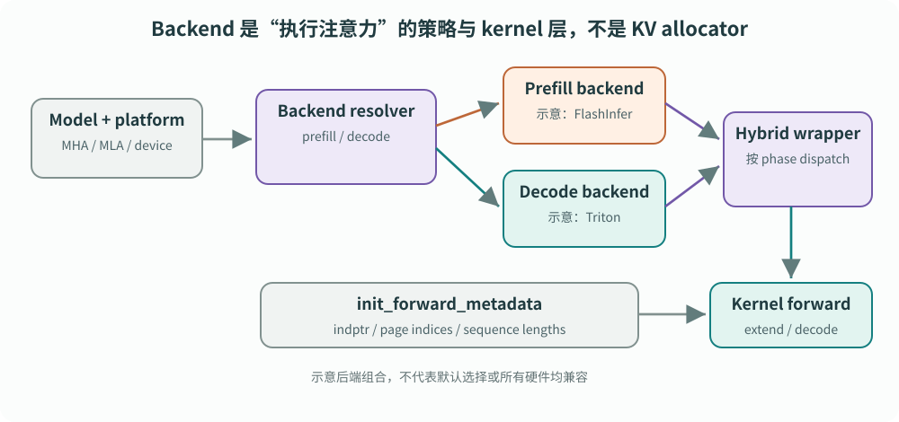
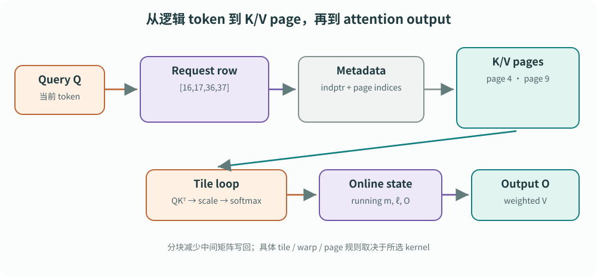

第 09 章 · GPU Kernel
Attention Backend：从后端解析、Metadata 到分页 KV Kernel
把 backend selection、forward metadata 与 attention kernel 分成三层，追踪一个 Query 如何找到历史 K/V。
看到 FlashInfer、Triton、FlashAttention 或 TensorRT-LLM 这些名字，很容易误以为它们只是可互换的“快慢开关”。真正的 attention backend 还承担 metadata 准备、page table 解释、Prefill/Decode 模式分发、K/V 写入以及模型架构兼容等工作。理解这层边界，才能从一个错误的 page index 或 kernel incompatibility 追到正确位置。
读完本章，你应该能
- 区分 backend resolver、forward metadata 与具体 kernel。
- 解释 Prefill/Decode backend 不同为何需要 hybrid wrapper。
- 沿 FlashInfer 的 metadata、forward_extend 和 forward_decode 追踪 KV 读写。
- 理解 online softmax 的分块归并思想，并知道它不是所有 backend 的唯一实现。
1. 先把 attention execution 拆成三层
第一层是 backend resolver：结合模型架构、设备和参数，确定 Prefill 与 Decode 分别用哪个 backend。第二层是 metadata planner：根据 batch mode、sequence lengths、request-to-token mapping 和页信息构造 kernel 所需的 metadata。第三层才是具体 kernel/wrapper：执行 QKᵀ、mask、softmax、加权 V 等计算。

2. Resolver：Prefill 与 Decode 可以是两个后端
当前 build_attention_backends() 调用 resolver 获取 prefill/decode backend strings。如果两者相同，构建单一后端；若不同，则构建 HybridAttnBackend，按 forward phase 分发到对应实现。Draft worker 还可能拥有独立的 draft backend override。
这说明“Attention backend”不必是一套贯穿所有阶段的单一 kernel。官方文档将 prefill/decode hybrid 标记为实验性功能，并列出不同设备、MHA/MLA 与 speculative decoding 组合的约束。backend compatibility matrix 必须跟随版本更新，不要从一张旧表推导所有 GPU 的默认选择。
3. Metadata：逻辑请求表如何变成 kernel 能读的索引
以 FlashInfer 路径为例，init_forward_metadata() 会根据 forward mode 构造 DecodeMetadata 或 PrefillMetadata，并调用对应 indices updater。Decode、target verify 和普通 extend 的 metadata 路径并不完全相同。
之后 forward_extend() 和 forward_decode() 会按当前模式写入新 K/V、取得 KV cache view，并调用对应 wrapper。allocator 管理物理 slot；metadata updater 把逻辑请求位置转换成 kernel 可遍历的页索引。

4. Attention 的数学主干与在线归一化
标准 scaled dot-product attention 的核心仍是：
其中 M 表示 causal、window 或其他 mask/bias。长上下文的 K/V 不一定连续；paged attention 的 metadata 告诉 kernel 去哪些页读取。FlashAttention-2 和 FlashInfer 等系统还会利用分块与在线归一化减少中间矩阵写回，但具体 tile 结构、warp 分工和 page traversal 是各 backend 的实现细节。
在线 softmax 的关键是维护 running maximum m、归一化分母 ℓ 与未归一化输出累积 u，把新 tile 的部分结果稳定地并入旧状态。设新 tile 的局部统计量为 (m_b, ℓ_b, u_b)：
最后输出为 u′ / ℓ′（要求 ℓ′>0）。空块或全 mask block 的有效质量为0，不能直接计算 −∞−(−∞)；应跳过空块或显式处理全 mask 行，不以 NaN 冒充有效 attention。初始状态可取 m = −∞、ℓ = 0、u = 0。examples/online_softmax.py 用 Python 数值实验验证分块累积与一次性 softmax 的等价性；它不是 GPU kernel 的实现。
源码版本说明：本章固定旧快照；当前统一 kernel 命名空间迁移见 第51章，历史链接保留原 SHA。
5. 从请求到 FlashInfer wrapper 的源码路线
resolve_attention_backend_strs()：解析 prefill/decode backend。_build_resolved_backend()：构建单 backend 或 hybrid wrapper。init_forward_metadata()：选择 decode / verify / extend metadata。forward_extend()：写入新 K/V 并调用 prefill wrapper。forward_decode()：写入新 K/V 并调用 decode wrapper。
这是 FlashInfer 一个具体 backend 的阅读路线，不能推广成 Triton/FA3/TRT-LLM 内部也使用相同类名和控制流。
6. 交互：不同 forward mode 会准备不同 metadata
选择当前计算模式，观察它为何需要不同的索引与 wrapper。
Forward mode → metadata
Prefill / Extend：多个新输入位置需要扩展 KV；metadata 需表达 prefix length、sequence length 与可能的 paged/ragged 路径。
Decode：每条活跃请求通常追加一个位置；读取历史 KV 的索引计划由 decode metadata/wrapper 使用。
Target Verify：Speculative target verification 会评估候选 token/tree；backend 需要与 verify mask、draft topology 和当前 speculative mode 兼容。
7. 后端兼容性不是一个静态“排行榜”
官方文档按 CUDA 设备代际、MHA/MLA 模型、Prefill/Decode 阶段列出自动选择与限制；hybrid attention 也可能是 experimental。Speculative decoding、page_size、quantized KV、context parallelism 和 CUDA Graph capture 都会改变可用组合。
例如当前文档指出，某些 paged MHA + speculative tree 组合对 FlashInfer 有额外约束；不同后端也可能对 DCP target verify 支持不同。不要把某个 H100 benchmark 或某个模型的 backend 推荐，直接推广到 B200、AMD、NPU、MLA 或不同 page size。
8. 如何做 kernel 级性能判断？
至少区分 Prefill 与 Decode，固定模型、dtype、KV layout、page size、输入输出长度和 batch 形状；报告 TTFT、ITL/TPOT、吞吐、P95/P99，并记录 backend 的实际选择、是否启用 CUDA Graph、是否发生 dequant/workspace 路径。若比较两种 backend，必须确认它们执行的是相同的语义和兼容配置。
本章没有运行 GPU benchmark，也没有宣称 FlashInfer 或 Triton 在所有场景更快。下一章会利用相同的 target verification 路径理解 EAGLE：一次 target forward 如何检查多个草稿候选。
参考资料与版本边界
实现级描述以 sgl-project/sglang@6a4e10a0ee643dfbe5f59a98b60293bc11fc1bdd 为快照（2026-11-23 核查）。源码 main 后续会变化；新版本需要重新核对调用路径、默认配置和兼容矩阵。图中页号、chunk 数值和概率向量均为 toy/derived，不是性能测量。